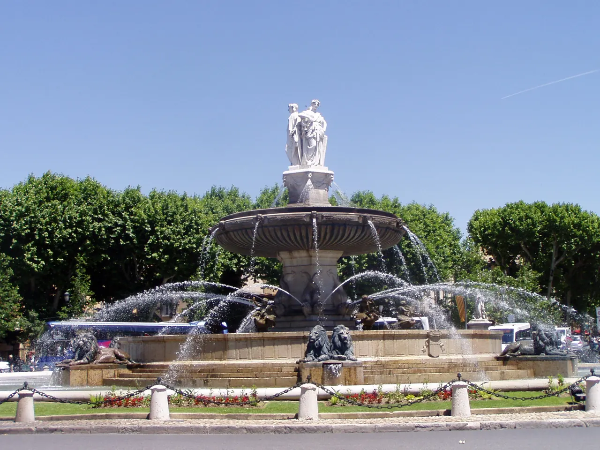

{kind=link}

Atelier des Lauves
폴 세잔이 생의 마지막 4년(1902–1906) 동안 매일 그림을 그렸던 언덕 위 아틀리에. 북향 채광창, 대형 캔버스용 벽 슬릿, 정물화에 등장했던 올리브 단지와 해골이 그대로 보존된 근대 미술의 성지.

1860년 엑상프로방스의 근대화와 졸라 운하(Canal Zola) 개통을 기념하여 제너럴 드골 광장(Place du Général-de-Gaulle) 중앙에 세워진 거대한 원형 분수다.
지름 41m, 높이 12m의 압도적인 규모로, 당시로서는 혁신적인 대형 주철 수반을 사용했다.
분수 최상단에 서 있는 세 명의 대리석 여신상은 각각 엑상프로방스(정의의 여신), 마르세유(상업과 농업의 여신), 아비뇽(예술의 여신)을 향해 시선을 던지고 있어, 19세기 엑상이 프로방스 내에서 차지했던 법률, 교역, 문화의 중심적 위상을 상징한다.
"엑상프로방스 도심 탐방의 영원한 출발점이자 방향 감각을 잡는 나침반이다." 별도로 오랜 시간 머무는 목적지가 아니라, 렌터카 주차 후 구시가지로 걸어 들어갈 때나 쿠르 미라보의 시작점에서 10~15분간 세 여신상의 시선 방향과 분수 야경을 감상하기에 가장 좋은 도시의 랜드마크다.
| 항목 | 상세 정보 |
|---|---|
| 위치 | Place du Général-de-Gaulle, 13100 Aix-en-Provence |
| 운영/요금 | 연중 24시간 개방 / 무료 |
| 교통/접근 | 엑상프로방스 버스터미널(Gare Routière)에서 도보 5분 / Cours Mirabeau 서쪽 끝 기점 |
| 주차 | Parking Rotonde (분수 바로 지하 직결 공영주차장) / Parking Méjanes (도보 3분) |
| 보행 주의 | 대형 회전교차로 한가운데 위치하므로 차도로 내려가지 말고 보도 횡단보도를 이용할 것 |
수조 둘레를 따라 2마리씩 4개 조를 이룬 총 8마리의 청동 사자상이 물을 뿜고 있으며, 돌고래를 탄 인어와 백조 조각이 수반 곳곳을 장식하고 있다.
폴 세잔이 생의 마지막 4년(1902–1906) 동안 매일 그림을 그렸던 언덕 위 아틀리에. 북향 채광창, 대형 캔버스용 벽 슬릿, 정물화에 등장했던 올리브 단지와 해골이 그대로 보존된 근대 미술의 성지.

폴 세잔이 20세부터 60세까지 40년간 머물며 화가로 성장했던 가문의 여름 저택. 살롱의 초기 벽화, 마로니에 가로수길, 분수 연못, 그리고 화가가 최초로 생트 빅투아르 산을 그렸던 역사적 현장.

마르세유와 카시스 사이에 걸쳐 20km에 걸쳐 펼쳐진 유럽 유일의 지중해 연안 국립공원. 에메랄드빛 바다로 수직 낙하하는 백색 석회암 피오르 협만들의 장관.
엑상프로방스 건축물의 황금빛 사암을 공급하던 고대·중세 채석장. 직각으로 깎인 붉은 사암 절벽과 소나무 숲 사이에서 세잔이 큐비즘의 기하학적 구도를 태동시켰던 야외 작업장.

유럽 최고 높이의 해안 절벽 캅 카나유(Cap Canaille) 아래 자리한 아늑한 지중해 어항. 파스텔톤 가옥, 칼랑크 국립공원 유람선 출발지, 유서 깊은 카시스 화이트 와인(AOC Cassis)의 고향.

1651년 옛 성벽 자리에 조성된 440m의 플라타너스 가로수길. 북쪽의 활기찬 카페와 남쪽의 고요한 17세기 귀족 저택, 4개의 유서 깊은 분수가 관통하는 엑상프로방스의 심장.